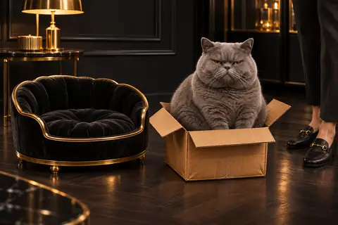

Koci Notatnik / Krótkie opowieści
Rezydencja · 2 min czytaniaKarton kontra legowisko. Człowiek zapłacił za niewłaściwą część zestawu.
Kochani, personel kupił mi legowisko premium. Wypakował je z namaszczeniem, poprawił poduszkę i czekał na zachwyt. Wszedłem do kartonu. Uwielbiam sztukę z zaskakującym zakończeniem.

Dlaczego kot woli karton od legowiska?
Karton może dawać kotu osłonięte, przytulne miejsce do odpoczynku i schowania się. Jego cena ma dla kota mniejsze znaczenie niż poczucie bezpieczeństwa.
Apartament z widokiem na rozczarowanie
— Ale to legowisko kosztowało… — zaczął. Nie skończył. Najwyraźniej zorientował się, że nie umiem czytać cen, a potrafię bardzo skutecznie ignorować argumenty.
Sam wybrałem tego człowieka. Rokował świetnie: otwierał drzwi i nie zadawał pytań o moją zdolność kredytową. Niestety, teraz oczekuje ode mnie entuzjazmu wobec tapicerki.
W kartonie mam trzy ściany, prywatność i osobne wejście dla zarządu. W legowisku każdy widzi, czy pracuję. To poważna wada architektoniczna.
Personel przestawił drogi mebel bliżej okna. Potem bliżej kaloryfera. Potem znowu pod ścianę. Obserwowałem remont z kartonu. Mieszkanie samo się urządza, jeśli zatrudnisz odpowiednio podatnego człowieka.
Wieczorem zapytał, czy chociaż spróbuję. Położyłem łapę na brzegu pudełka. Tak, kochany. Właśnie testuję wariant z tarasem.
Co ma zapamiętać Twój człowiek
- Zostaw czysty, stabilny karton bez zszywek, sznurków i luźnej taśmy.
- Postaw kryjówkę w spokojnym miejscu; nie wyciągaj z niej kota dla zabawy.
- Daj wybór kilku miejsc odpoczynku i pozwól kotu zdecydować.